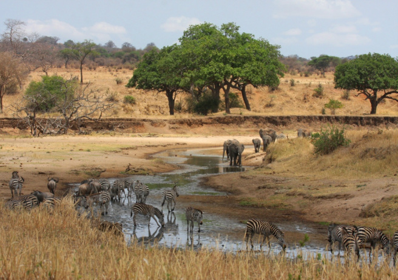
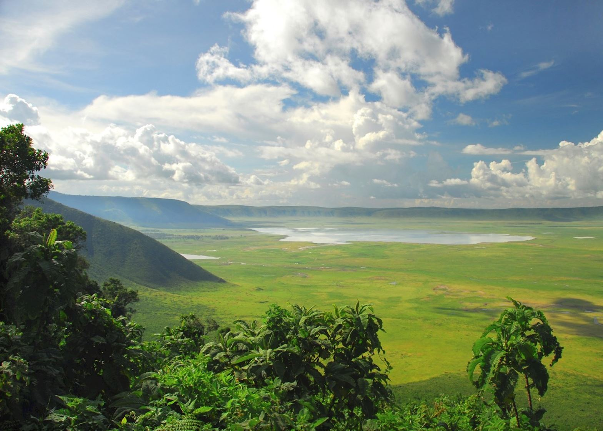
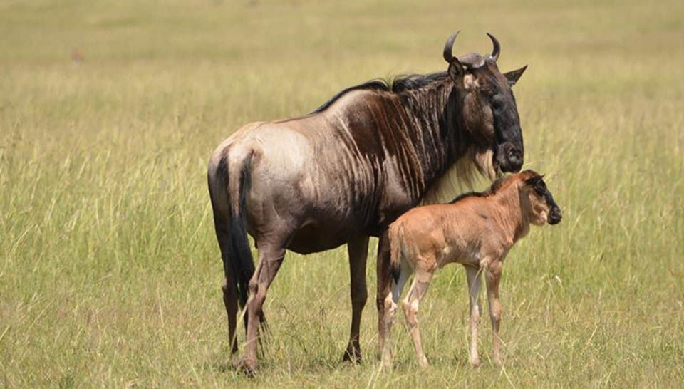
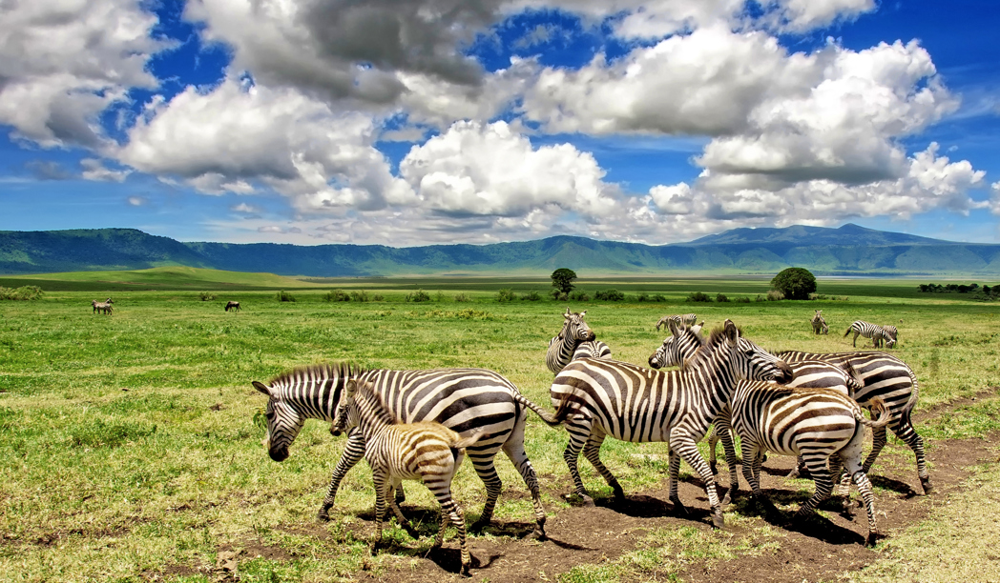
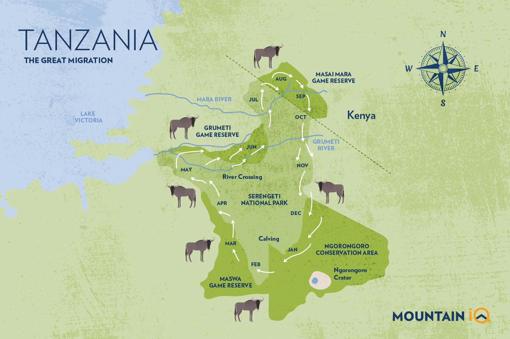

When is the Ideal Time for Your Tanzanian Adventure?
Tanzania is a fantastic destination year-round, but the "best" time to visit depends heavily on what you want to see and do. Whether you're dreaming of witnessing the Great Migration, summiting Kilimanjaro, or relaxing on Zanzibar's beaches, understanding the country's distinct seasons and wildlife patterns is key to planning the perfect trip.
This guide breaks down Tanzania's climate and highlights the optimal periods for various activities, helping you choose the ideal window for your Golden Memories Safari.
Note: Weather patterns can vary, and wildlife movements aren't precisely predictable. This guide provides general expectations.
Tanzania's Seasons: An Overview
Located near the equator, Tanzania doesn't experience extreme winter/summer variations. Instead, the climate is primarily defined by rainy and dry seasons:
Dry Seasons
- Long Dry Season: June to October (Cooler and dry)
- Short Dry Season: January to February (Hotter and dry)
Generally considered the best time for traditional safaris due to thinner vegetation and animals congregating near water.
Wet Seasons ("Green Seasons")
- Short Rains: November to December (Lighter, often afternoon showers)
- Long Rains: March to May (Heaviest rainfall, especially April/May)
Landscapes become lush and green, excellent for birding, fewer crowds, and potentially lower prices.
Visiting Tanzania by Season
Dry Season (June - October)
Often considered the peak safari season.
Pros:
- Excellent wildlife viewing as vegetation thins and animals gather near rivers/waterholes.
- Pleasant weather: Sunny days, cool nights (especially June-Aug).
- Best time for witnessing the Mara River crossings in the Northern Serengeti (July-Oct).
- Ideal conditions for climbing Kilimanjaro.
- Good weather for Zanzibar beaches.
Cons:
- Peak season: Parks (especially Serengeti North/Central, Ngorongoro) can be crowded.
- Highest prices for accommodation and tours.
- Landscape can be dry and dusty.
Short Rains (November - December)
A transitional period offering unique opportunities.
Pros:
- Landscapes start turning green and beautiful.
- Migration herds begin moving south towards Ndutu.
- Good bird watching as migratory species arrive.
- Fewer crowds than peak season, potential shoulder season prices.
Cons:
- Occasional afternoon rain showers (usually short-lived).
- Migration location less predictable than peak dry/calving seasons.
- Humidity can increase.
Calving Season (January - March)
A spectacular time, especially in the south.
Pros:
- Witness the incredible Great Migration calving in Ndutu/Southern Serengeti (peak Feb).
- Excellent predator action attracted by vulnerable newborns.
- Generally dry and warm/hot weather.
- Good conditions for Kilimanjaro climbing.
- Clear skies often offer good views.
Cons:
- Ndutu area can become very busy during peak calving.
- Can be hot, especially in February/March.
Long Rains / Green Season (April - May)
The main wet season, offering different perspectives.
Pros:
- Beautiful, intensely green landscapes; dramatic skies for photography.
- Lowest prices and fewest crowds.
- Peak bird watching season.
- Migration herds start moving north through Central/West Serengeti.
Cons:
- Heavy rainfall likely, especially in April/May.
- Some roads can become muddy/impassable.
- Wildlife viewing can be more challenging as animals disperse and vegetation is thick.
- Some camps/lodges close during this period.
- Not recommended for Kilimanjaro or beach holidays.
Best Time for Specific Activities
Great Migration Viewing
- Calving (Ndutu/South): Dec - Mar
- Grumeti Crossings (West): May - Jul
- Mara Crossings (North): Jul - Oct
- General Movement: Year-round, location varies (see migration guide).
Kilimanjaro/Meru Climbing
- Best Conditions: June - Oct & Jan - Feb (drier, clearer skies).
- Possible but Wetter: Nov - Dec, March.
- Avoid: April - May (heavy rains).
Zanzibar & Coast

- Best Beach Weather: June - Oct & Dec - Feb (dry and sunny).
- Shoulder Seasons: Nov, March (potential showers, fewer crowds).
- Avoid: April - May (heavy rains).
So, When Should You Go?
The "best" time really depends on your priorities!
- For Migration River Crossings: Aim for July - October in the North.
- For Migration Calving: Aim for February in Ndutu.
- For Best General Wildlife & Weather (Classic Safari): Aim for June - October.
- For Kilimanjaro Climbing: Aim for June - October or January - February.
- For Best Beach Weather: Aim for June - October or December - February.
- For Lower Prices & Fewer Crowds (accepting potential rain): Consider November, January, March, or early June.
- For Bird Watching & Lush Scenery: Consider the wet seasons (Nov - May).
Confused? Don't worry! Our safari experts at Golden Memories Safaris can help you weigh the pros and cons based on your interests, budget, and available travel dates to recommend the perfect time for *your* Tanzanian adventure.